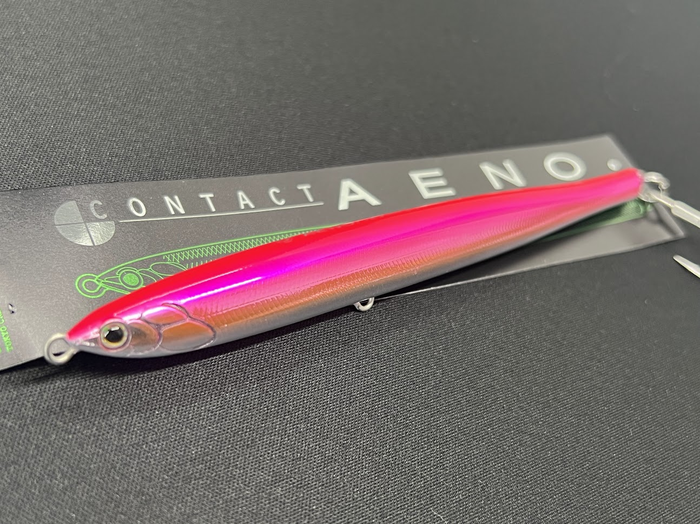
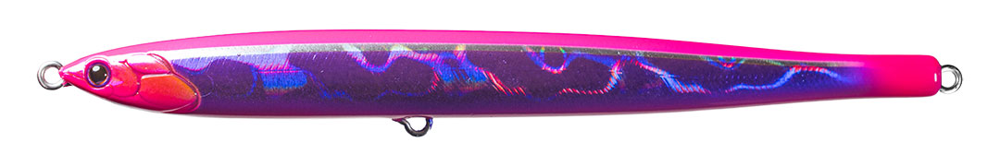
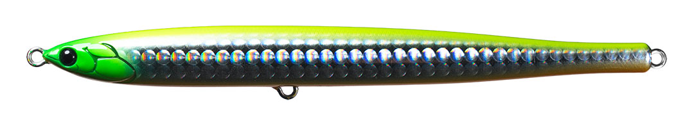
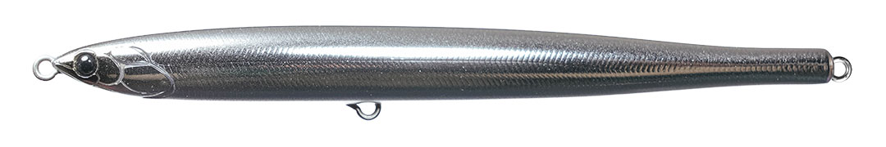
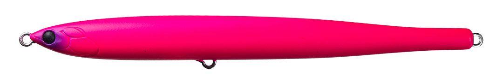

CONTACT AENO. (イーノ) サワラチューン
CONTACT AENO. (イーノ) サワラチューンはタックルハウスのシンキングジグミノーです。
人気サクラマス用ルアーがサワラ専用にチューンナップ！

スペック
- メーカー
- タックルハウス
- 長さ
- 129 mm
- 重さ
- 30 g
- フック
- フロント#6 テール#4
- リング
- #4
- レンジ
- タイプ
- ジグミノー
- 沈下タイプ
- シンキング
- アクション
- ローリング＋テールスイング
- ターゲット
- サクラマス
- 価格
- 2035円(税込)
- 発売日
- 2026-03-20
コンタクトイーノサワラチューンの特徴
サワラキャスティングの新たな切り札！サワラ特化の特徴を解説
-
細身ボディ形状による飛距離とスムーズな沈下
細身のナローティアドロップ形状は、空中や水中での抵抗を削減し、抜群の飛距離とスムーズな沈下を実現しています。
-
対応レンジは表層から深場まで
超早巻きでも海面を飛び出ることなく表層を引けます。また、沈下速度がはやいので、深場を探ることも簡単にできます。
-
サワラ専用のカラーとフックセッティング
サワラ狙いの超早巻きでもかかるようなセッティング。オリジナルからフックが1つ追加され、フッキング率が高まってます。
カラーもサワラの好む反射の強いカラーが多く、ケイムラUVコート仕様。
コンタクトイーノサワラチューンの使い方・得意な状況
ここから下は手動で追記してください。
ワンポイント
人気カラー
カラーは全6色！サワラの好むピンクカラーに中心にすべてのカラーにケイムラUV塗装でサワラ釣果に特化してます。

ピンクパープルサワラの好きなピンクカラーにケイムラによる強烈アピール

チャートオレンジベリー視認性の良いチャートカラーに胴体はフラッシングの強いホログラム仕様

メッキシルバフルシルバーなカラーは光の反射に特化。キラキラに目がないサワラのエサカラー

蛍光マットピンク唯一のマットカラー。キラキラに飽きたサワラや、ブリなども狙えるお得カラー
画像出典:タックルハウス公式HP
コンタクトイーノサワラチューンに似ているルアー
- ここに手動で追記してください。